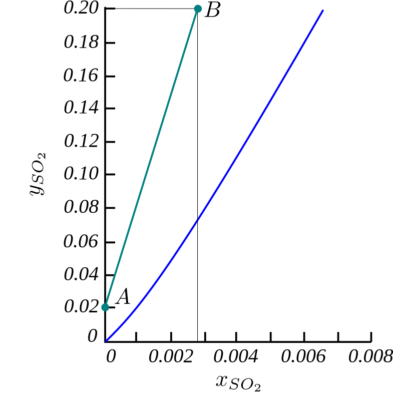
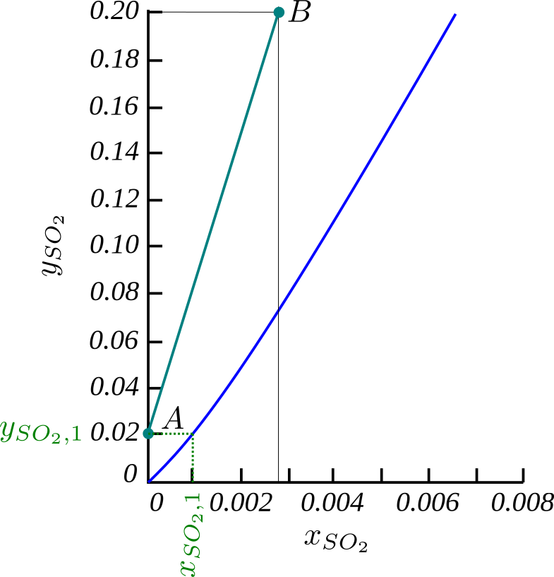
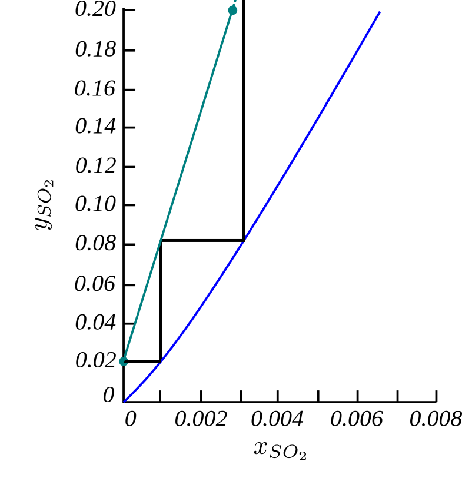

Multi-Stage Absorption: Part 2

- In the previous lecture, we found the general balance equation for any stage $n$ in an absorber.
- The power of this equation is that it relates $y_{A,n+1}$ and $x_{A,n}$, and it is known as an Operating Line equation.
- We can rewrite this equation to make this dependence explicit. \begin{align*} \frac{y_{A,n+1}}{1-y_{A,n+1}}&=\frac{L'}{V'}\frac{x_{A,n}}{1-x_{A,n}} + \frac{y_{A,1}}{1-y_{A,1}} - \frac{L'}{V'}\frac{x_{A,0}}{1-x_{A,0}} \end{align*}
- If we also assume that we have only a small concentration of $A$ in the system, we have $x_A\ll 1$ and $y_A\ll 1$.
- This allows us to greatly simplify the equation… \begin{align*} \frac{y_{A,n+1}}{\cancelto{1}{1-y_{A,n+1}}}&=\frac{L'}{V'}\frac{x_{A,n}}{\cancelto{1}{1-x_{A,n}}} + \frac{y_{A,1}}{\cancelto{1}{1-y_{A,1}}} - \frac{L'}{V'}\frac{x_{A,0}}{\cancelto{1}{1-x_{A,0}}}\\ y_{A,n+1}&=\frac{L'}{V'}\left(x_{A,n} - x_{A,0}\right) + y_{A,1} \end{align*}
\begin{align*} y_{A,n+1}&=\frac{L'}{V'}\left(x_{A,n} - x_{A,0}\right) + y_{A,1} \end{align*}
- This is the operating line equation for low concentrations, and makes the $x_{A,n} \to y_{A,n+1}$ dependence explicit.
- With the VLE data we have a function relating $y_{A,n} \to x_{A,n}$ \begin{align*} y_{A,n} = f^{(VLE)}(x_{A,n}) \end{align*} This is known as the equilibrium line.
- With these two relationships, we can solve a multi-stage absorber stage-by-stage…

- At the start of a design, we should be able to completely define one end of the evaporator ($L_0$ and $V_1$).
- As the system is binary, we only need to define the concentrations to completely specify the stream, as $L_n = L'/\left(1-x_{A,n}\right)$, and $V_n = V'/\left(1-y_{A,n}\right)$.
- We need to solve for each unknown concentration using the operating line and the equilibrium line.

- We can start by using the equilibrium line to define $L_1$ from $V_1$.
- The equilibrium line is used as the exit streams of an ideal stage are in equilibrium.

- Then, by using the operating line equation, we can define the vapour stream of the next stage $V_2$, from the liquid product of the current stage $L_1$.
- The operating line equation is simply a mass balance.

- The method then repeats itself as we move down the absorber, alternating between the VLE data and the operating line equation.
- This method is effective, if a little tedious. Often, we will have to look up the VLE data in a graph, and if we use the correct operating line equation, solving the resulting quadratic for the roots (see tutorial 3) is even more boring. \begin{align*} \frac{y_{A,n+1}}{1-y_{A,n+1}}&=\frac{L'}{V'}\frac{x_{A,n}}{1-x_{A,n}} + \frac{y_{A,1}}{1-y_{A,1}} - \frac{L'}{V'}\frac{x_{A,0}}{1-x_{A,0}} \end{align*}
- Let's consider an example absorption of $SO_2$ from air. The gas stream enters the absorber at $y_{SO_2,N+1}=0.2$ and leaves at $y_{SO_2,1}=0.02$. The inert air flow-rate is $V'=5.18$ kmol/hr.
- Pure water ($x_{SO_2,0}=0$) enters at the top at a flow-rate of $L'=L_0=333$ kmol/hr.
- We note that this completely specifies one end of the absorber (and half specifies the other).
- Assuming that the molar concentrations of $SO_2$ are small (they're not), we can use the operating line equation for low concentrations and it becomes \begin{align*} y_{A,SO_2}&=\frac{L'}{V'}\left(x_{SO_2,n} - x_{SO_2,0}\right) + y_{SO_2,1}\\ &=\frac{333}{5.18} x_{A,n} + 0.02 \end{align*}
- With the operating line ready, let us take a look at the equilibrium line.

- Often, we even obtain the Vapour-Liquid Equilibrium (VLE) data in the form of a plot of the equilibrium line (see right). \begin{align*} y_{A,n} = f^{(VLE)}(x_{A,n}) \end{align*}
- This is common where we are outside of the range of validility of Henry's or Raoult's law, and must resort to experimental data.
- We can now solve the problem stage by stage as illustrated before, but to avoid the tedious task of calculation, we'll do this graphically…

- To the $x$ - $y$ graph on the right, we will add the operating line. \begin{align*} y_{SO_2,n+1} &=\frac{333}{5.18} x_{SO_2,n} + 0.02 \end{align*}
- As it is a linear function, we need only generate two points, $A=(y=0.02, x=0)$ and $B=(y=0.2, x=0.0028)$, to draw it.
- We choose to plot at $y=0.02$ and $y=0.2$ as these are the entry and exit concentrations (upper and lower bounds) of the gas phase.

- As this equation \begin{align*} y_{SO_2,n+1} &=\frac{333}{5.18} x_{SO_2,n} + 0.02 \end{align*} applies for any stage, $n$, all pairs of $(y_{SO_2,n+1},x_{SO_2,n})$ values must lie on the operating line.
- Just as all pairs $(y_{SO_2,n},x_{SO_2,n})$ must lie on the equilibrium line !
- Starting at the outlet of the gas, we have a vapour concentration of $y_{SO_2,1}=0.02$.
- Just as outlined before, we use the equilibrium line to calculate the liquid concentration in that stage, $x_{SO_2,1}$ \begin{align*} y_{A,n} = f^{(VLE)}(x_{A,n}) \end{align*}
- This is found by reading the graph along the dotted lines.

- Next, we use this liquid concentration to calculate the vapour composition in the next stage using the operating line. \begin{align*} y_{SO_2,n+1} &=\frac{333}{5.18} x_{SO_2,n} + 0.02 \end{align*}
- Instead of using the equation, we can just follow the value $x_{SO_2,1}$ up until it intersects with the operating line.
- And now we can just repeat the process.
- Each horizontal step is a single theoretical stage.
- Where the horizontal step intersects the operating line it gives $y_{SO_2,n}$.
- Where the horizontal step intersects the equilibrium line it gives $x_{SO_2,n}$.
- The stepping process is repeated until the desired concentration is reached.
- In this case, we are looking for how many stages are needed to reach the inlet concentration of the gas $y_{SO_2,N+1}=0.2$.
- But this will not end on a whole number of plates…

- Whenever the outlet concentration is passed, the fraction of horizontal line is proportional to the fraction of a theoretical stage needed.
- In this case, we need $\approx1.9$ theoretical stages to perform the specified absorption.
- Assuming a plate efficiency of 25%, this translates to $1.9/0.25=7.6$ real plates/stages.
- But you can only have a whole number of plates, so our final design would consist of 8 real plates.
- One mistake we made in the previous design calculations is that we assumed that the concentration of $SO_2$, was small. \begin{align*} x_A&\ll 1 & y_A &\ll 1 \end{align*}
- But in the gas phase, the concentration reaches up to 20% at the inlet!
- As an example of the error, the simplified operating line predicted a final liquid concentration of $x_N=0.0028$; however, the proper operating line equation (which is an exact mass balance) gives $x_N=0.00356$!
- We will need to use the full operating line equation. \begin{align*} \frac{y_{A,n+1}}{1-y_{A,n+1}}= \frac{L'}{V'}\frac{x_{A,n}}{1-x_{A,n}} + \frac{y_{A,1}}{1-y_{A,1}} - \frac{L'}{V'}\frac{x_{A,0}}{1-x_{A,0}} \end{align*}
- The only complication of the full operating line equation is that it is not a straight line.
- Instead of plotting only two points for the operating line, we will need to plot several to ensure we capture any curvature of the line over the studied range.
- These extra points should be equi-spaced between the two limiting concentrations of the gas stream…
- Including a couple more points (and fixing the end point) makes the curvature evident and we can solve the absorber again.
- With this change the number of theoretical plates has increased from $\approx1.9\to2.18$.
- We now have $2.18/0.25=8.72$ real stages, or 9 actual plates.
- Now that the technique has been made clear, we will consider some other interesting limits of the design.

- In the previous example, it appears like we used a seemingly arbitrary amount of pure water ($L'=L_0=333$ kmol/hr) to achieve our separation.
- But what is the optimal amount to use? Is it the minimum possible?
- We cannot concentrate the $SO_2$ in the liquid phase any further than the equilibrium liquid concentration for the most concentrated gas stream in the absorber.
- In this case, the most concentrated stream is the inlet gas, $y_{SO_2,N+1}=0.2$.
- We can find out the maximum possible concentration of the liquid stream using the equilibrium line.
- Reading the corresponding value of $x^{(max)}_{SO_2,N} = 0.0066$ at $y_{SO_2,N+1}=0.2$, we find the maximum physically-possible concentration of the liquid stream.
- The flow-rate of liquid this corresponds to is the minimum theoretical flowrate which is still capable of achieving the desired separation.

- We can calculate the minimum liquid flowrate from the general operating equation, as we have $y_{SO_2,1}=0.02$, $y_{SO_2,N+1}=0.2$, and $V'=5.18$ kmol/hr from the design specification, and we just calculated the maximum liquid concentration $x^{(max)}_{SO_2,N}=0.0066$ \begin{align*} L'_{min}\frac{x_{SO_2,0}}{1-x_{SO_2,0}}+V'\frac{y_{SO_2,N+1}}{1-y_{SO_2,N+1}}&=L'_{min}\frac{x^{(max)}_{SO_2,N}}{1-x^{(max)}_{SO_2,N}} + V'\frac{y_{SO_2,1}}{1-y_{SO_2,1}}\\ \cancelto{0}{L'_{min}\frac{0}{1-0}}+5.18\frac{0.2}{1-0.2}&=L'_{min}\frac{0.0066}{1-0.0066} + 5.18\frac{0.02}{1-0.02}\\ L'_{min} & \approx 179 \textrm{kmol/hr} \end{align*}
- Thus, for the previous design we were running at $L'/L'_{min}=333/179\approx 1.86$ times the minimum liquid flowrate.
- As a very-rough rule-of-thumb, it is most economical to operate at an operating line with an average slope 1.5 times the average of the equilibrium line.
- But why not at $L'=L_{min}$? Surely this is the most efficient use of water?
- If we try to design at the minimum liquid flowrate, we proceed as before.
- For a rough calculation, we will neglect the curvature of the operating line, and just plot two points.
- The first point is the same as before, defined by the top of the absorber, $A=(y=0.02, x=0)$.
- The second point is the bottom of the absorber, given by $B=(y=0.2, x^{(max)}=0.0066)$.
- This lies on both the equilibrium line and the operating line! Which is not surprising given how it was calculated.

- If we try to find out how many theoretical stages are required to perform the absorption, we find that we need a very large number.
- In fact, we need an infinite number of stages to reach the outlet condition.
- This highlights that the design of absorbers is a trade off between liquid flow-rates, and equipment cost.
- Lower flow-rates (cheaper running costs) = more stages/bigger columns (more expensive capital costs).
- The recommendation regarding the relative slopes of the operating and equilibrium lines is a rough rule of thumb as to what the most economical choice is, but the true optimum greatly depends on the system studied.

- So far, we have considered the absorption of a single component from the gas phase to the liquid phase.
- In such a system, the design looks similar to the $SO_2$ absorber we just designed (see right).
- But what about desorption of a component from the liquid phase into the gas phase?

- This is called stripping, as a component is stripped from the liquid phase into the gas phase.
- In stripping, the operating line appears below the equilibrium line.
- Despite this, the design procedure is identical to an absorber column.
- We can now design multi-stage absorbers and strippers, now we can move onto distillation …